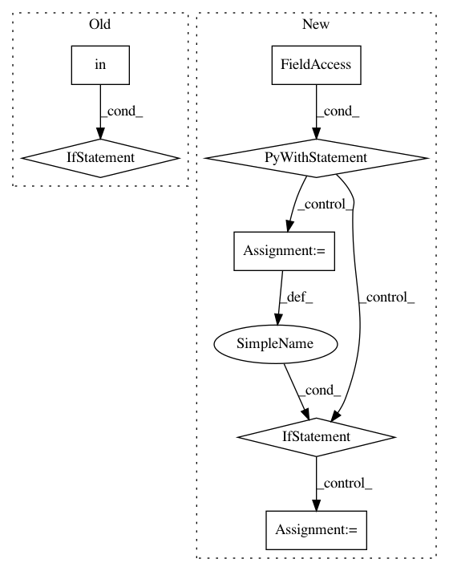

34bae27ac7d3c39335a2b8c7d4cd4efba56aa398,rllib/execution/replay_buffer.py,LocalReplayBuffer,add_batch,#LocalReplayBuffer#Any#,348
Before Change
After Change
// Handle everything as if multiagent
if isinstance(batch, SampleBatch):
batch = MultiAgentBatch({DEFAULT_POLICY_ID: batch}, batch.count)
with self.add_batch_timer:
if self.replay_mode == "lockstep":
// Note that prioritization is not supported in this mode.
for s in batch.timeslices(self.replay_sequence_length):
self.replay_buffers[_ALL_POLICIES].add(s, weight=None)
else:
for policy_id, b in batch.policy_batches.items():
for s in b.timeslices(self.replay_sequence_length):
if "weights" in s:
weight = np.mean(s["weights"])
else:
weight = None
self.replay_buffers[policy_id].add(s, weight=weight)
self.num_added += batch.count
def replay(self):
if self._fake_batch:
In pattern: SUPERPATTERN
Frequency: 3
Non-data size: 7
Instances
Project Name: ray-project/ray
Commit Name: 34bae27ac7d3c39335a2b8c7d4cd4efba56aa398
Time: 2020-06-12
Author: ekhliang@gmail.com
File Name: rllib/execution/replay_buffer.py
Class Name: LocalReplayBuffer
Method Name: add_batch
Project Name: streamlit/streamlit
Commit Name: e0e9d7350826c7d968e48181cea38bde23942c30
Time: 2019-06-19
Author: tconkling@gmail.com
File Name: lib/streamlit/watcher/EventBasedFileWatcher.py
Class Name: _FolderEventHandler
Method Name: add_file_change_listener
Project Name: streamlit/streamlit
Commit Name: 0548aad44b5138ea0bbc96ef8964b986bebcb589
Time: 2019-06-18
Author: tconkling@gmail.com
File Name: lib/streamlit/watcher/EventBasedFileWatcher.py
Class Name: _FolderEventHandler
Method Name: add_file_change_listener